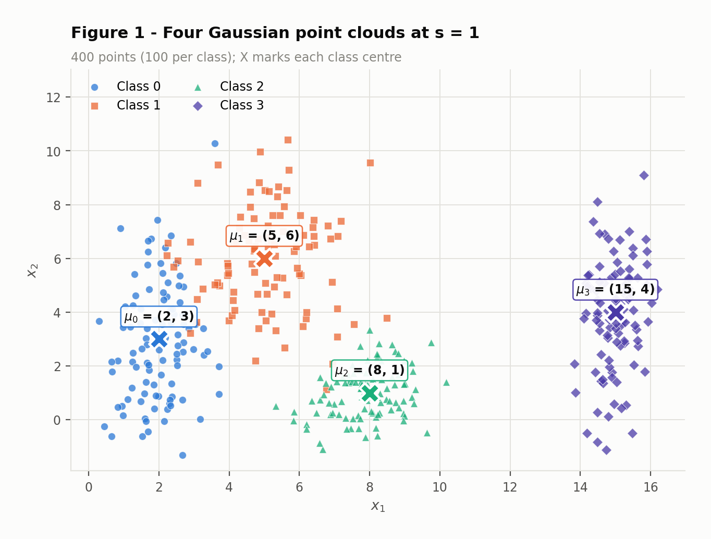
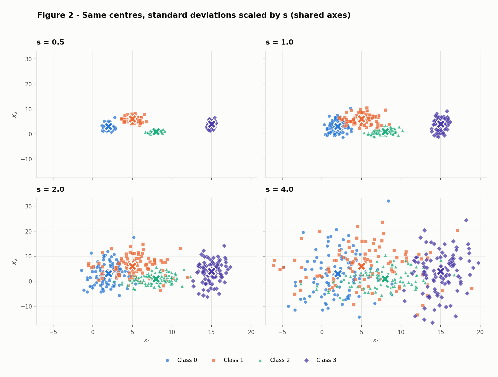
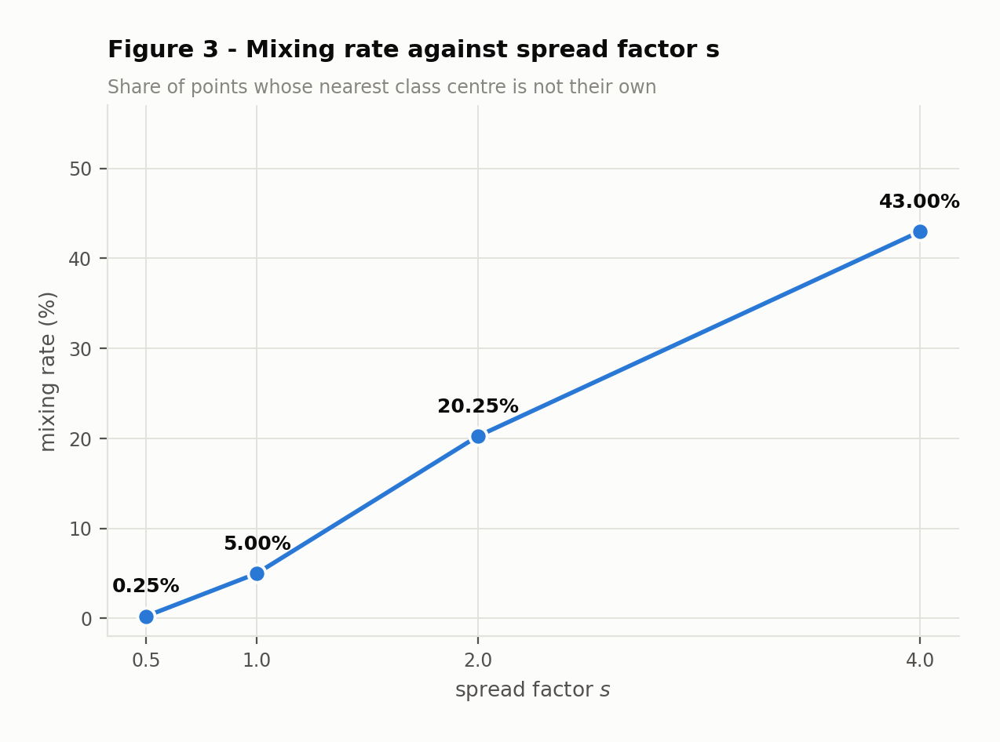
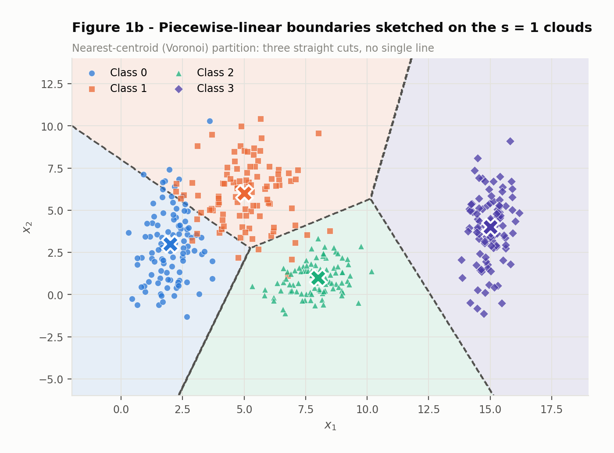
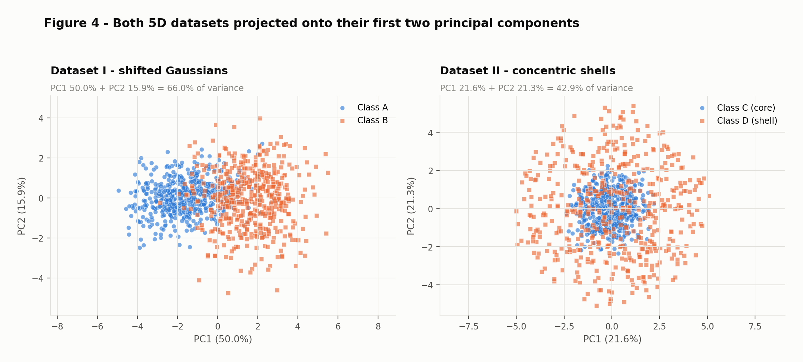
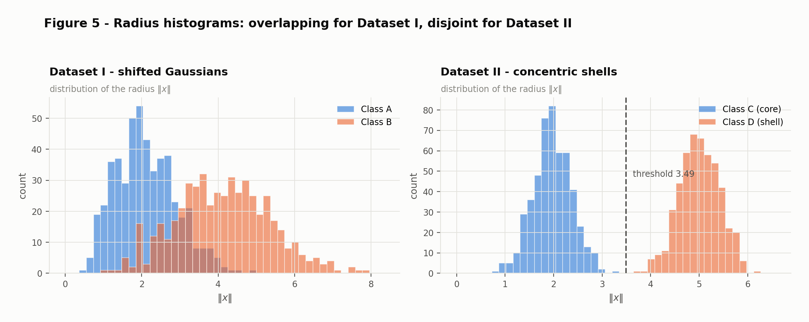
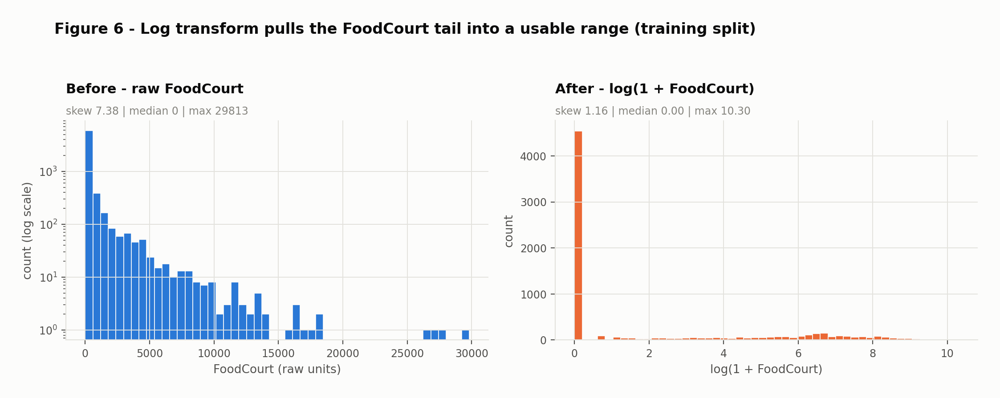
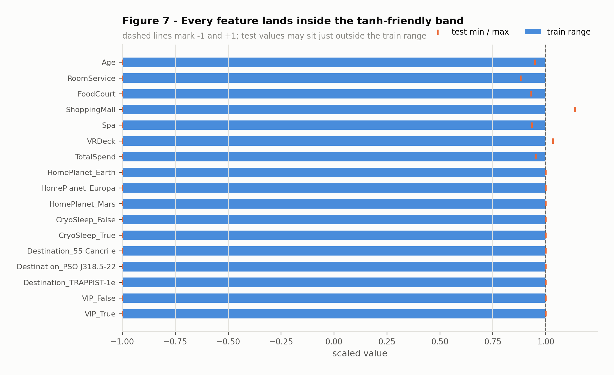

Exercise · Data
tanh networkThree linked studies on what a dataset’s shape does to a classifier: how spread destroys linear separability in 2D, why a linear model cannot touch concentric shells in 5D no matter how much data it sees, and how a messy real-world table is turned into a numeric matrix a neural network can actually train on.
Four Gaussian classes share a plane. Their centres never move; only their spread does. The question is how much spread a fixed geometry can absorb before the classes stop being distinguishable — and what kind of decision boundary is needed along the way.
Each class contributes 100 points drawn from an axis-aligned Gaussian, for 400 points in total. The generator is
seeded once with np.random.default_rng(42).
| Class | μx | μy | σx | σy | σ̄ = (σx+σy)/2 | n |
|---|---|---|---|---|---|---|
| Class 0 | 2 | 3 | 0.8 | 2.5 | 1.65 | 100 |
| Class 1 | 5 | 6 | 1.2 | 1.9 | 1.55 | 100 |
| Class 2 | 8 | 1 | 0.9 | 0.9 | 0.90 | 100 |
| Class 3 | 15 | 4 | 0.5 | 2.0 | 1.25 | 100 |

x₁ alone. Classes 0 and 1 already interpenetrate along the diagonal between their centres, and class 2 — the most compact of the four — brushes the lower edge of class 1.The same four classes are regenerated at four spread factors, s ∈ {0.5, 1, 2, 4}. Every standard
deviation is multiplied by s; the means are untouched. To make the panels directly comparable, one pool
of standard-normal deviates z is drawn once and reused, so each point is
x = μ + (s·σ)⊙z — the same underlying sample, breathing in and out.

s = 0.5 the classes are four tight, obviously distinct islands. By s = 4 they are one cloud with a faint left-to-right colour gradient.For each pair of classes, the separation ratio compares how far apart the centres are with how much the two classes spread:
r_ij = ||mu_i - mu_j|| / (sigma_bar_i + sigma_bar_j),
where sigma_bar_k = (sigma_kx + sigma_ky) / 2Because the numerator is fixed and the denominator is proportional to s, the ratio is exactly
inversely proportional to the spread factor: r_ij(s) = r_ij(1) / s. No simulation is needed to know
what happens at any other s.
| Pair | ||μi − μj|| | σ̄i + σ̄j | rij at s = 1 | rij at s = 2 |
|---|---|---|---|---|
| 0-1 | 4.2426 | 3.20 | 1.3258 | 0.6629 |
| 0-2 | 6.3246 | 2.55 | 2.4802 | 1.2401 |
| 0-3 | 13.0384 | 2.90 | 4.4960 | 2.2480 |
| 1-2 | 5.8310 | 2.45 | 2.3800 | 1.1900 |
| 1-3 | 10.1980 | 2.80 | 3.6422 | 1.8211 |
| 2-3 | 7.6158 | 2.15 | 3.5422 | 1.7711 |
Classes 0 and 1 are the closest relative to their spread, at
r = 1.3258 when s = 1. Doubling the spread to s = 2 halves it to
0.6629 — below 1, meaning the centres are now closer together than the classes are wide.
That is the point at which the two clouds stop having distinct territory.
The mixing rate is the share of points whose nearest class centre is not their own centre. It is the error a nearest-centroid rule would make with perfect knowledge of the true means, so it isolates the effect of geometry from any question of model fitting.
| s | Mixing rate | Misassigned points | r0-1 |
|---|---|---|---|
| 0.5 | 0.25% | 1 / 400 | 2.6517 |
| 1.0 | 5.00% | 20 / 400 | 1.3258 |
| 2.0 | 20.25% | 81 / 400 | 0.6629 |
| 4.0 | 43.00% | 172 / 400 | 0.3315 |

s = 4 well over a third of the points already sit closer to a foreign centre than to their own.s = 1Overlap at the nominal spread is local, not global. Class 3 is cleanly isolated: its centre is
13.04 units from class 0 and its nearest neighbour, class 2, is
still 7.62 units away, so nothing reaches it. The contested
region is the triangle formed by classes 0, 1 and 2. Class 0 is tall and narrow
(σ = [0.8, 2.5]) and leans up into class 1; class 1 is broad in both directions and spills down
toward class 2. The 20 misassigned points at s = 1 come almost entirely from
this cluster of three.
No — and not only because the classes touch. A single line cuts the plane into two half-planes, so it can
express at most a two-way decision. Four classes need at least three cuts regardless of how far apart they sit;
even the perfectly separated s = 0.5 panel cannot be resolved by one line. Separability and
sufficiency are different questions, and it is the second one that sets the floor here.
What the geometry does decide is whether straight cuts suffice at all. At s = 1 they very
nearly do: the four centres are in general position, and the nearest-centroid partition below assigns
95.00% of points correctly using three straight boundaries.

Scaling σ leaves the boundaries exactly where they are — they depend only on the means,
which never move. What changes is how much probability mass each class pushes across them. This is the mechanism
behind the numbers in Figure 3: at s = 0.5 the clouds are far inside their own cells and mixing is
0.25%; at s = 2 the tightest pair's ratio has fallen to 0.6629 and mixing
reaches 20.25%; at s = 4 it is 43.00%. A more flexible boundary would
not rescue the last case. Once two classes are centred 4.24
units apart while each is several units wide, the overlap is a property of the distributions themselves, and no
decision surface can undo it.
Two 5-dimensional datasets, each with 500 points per class. They are built to look similar under the summary statistics a linear model relies on, and to behave completely differently.
Two correlated Gaussians offset along every axis: class A is centred at the origin, class B at
[1.5, 1.5, 1.5, 1.5, 1.5], giving a theoretical centre distance of
1.5√5 = 3.3541. The covariance matrices differ in both
scale and correlation structure — class B is the wider of the two, and its first two coordinates are
negatively correlated where class A’s are positively correlated.
Sigma_A = [[ 1.0, 0.8, 0.1, 0.0, 0.0], Sigma_B = [[ 1.5, -0.7, 0.2, 0.0, 0.0],
[ 0.8, 1.0, 0.3, 0.0, 0.0], [-0.7, 1.5, 0.4, 0.0, 0.0],
[ 0.1, 0.3, 1.0, 0.5, 0.0], [ 0.2, 0.4, 1.5, 0.6, 0.0],
[ 0.0, 0.0, 0.5, 1.0, 0.2], [ 0.0, 0.0, 0.6, 1.5, 0.3],
[ 0.0, 0.0, 0.0, 0.2, 1.0]] [ 0.0, 0.0, 0.0, 0.3, 1.5]]Both matrices are symmetric and positive definite (smallest eigenvalues 0.1582 and 0.4979), so both
are valid covariance matrices and rng.multivariate_normal samples them without a correction.
Here direction and distance are generated separately. A direction is drawn uniformly on the unit 5-sphere by normalising a standard Gaussian vector, then scaled by a radius that decides which shell the point belongs to:
v = rng.standard_normal((n, 5))
u = v / ||v|| # uniform direction on the unit sphere
rho_C = rng.normal(2.0, 0.4) # class C, the core
rho_D = rng.normal(5.0, 0.4) # class D, the outer shell
x = rho * uThe radius specification N(2.0, 0.4) is read as mean 2.0, standard deviation 0.4. Under the
alternative reading (0.4 as a variance, i.e. σ ≈ 0.632) the shells would still be cleanly separated, so
nothing in the conclusions below depends on this choice — only the exact width of the gap does.

| Quantity | Dataset I | Dataset II |
|---|---|---|
Distance between class centres ||c1 − c2|| | 3.2282 | 0.2662 |
Norm of centre 1 ||c1|| | 0.1048 | 0.0846 |
Norm of centre 2 ||c2|| | 3.3190 | 0.2660 |
| Explained variance PC1 | 50.04% | 21.59% |
| Explained variance PC2 | 15.93% | 21.32% |
| Explained variance PC1 + PC2 | 65.97% | 42.91% |
| Mean radius, class 1 | 2.1085 | 1.9718 |
| Mean radius, class 2 | 4.1284 | 5.0047 |
| Largest radius, class 1 | 4.9749 | 3.2467 |
| Smallest radius, class 2 | 0.9507 | 3.7522 |
The explained-variance profiles are the clearest signal. Dataset I concentrates its variance: 50.0% / 15.9% / 14.6% / 13.4% / 6.1%. Dataset II spreads it almost evenly: 21.6% / 21.3% / 19.9% / 19.8% / 17.4% — close to the 20% per component that perfect isotropy would give. There is no privileged direction to find, because the class structure is not directional.

Each class is spherically symmetric about the origin. Writing a point as x = ρu with the
direction u uniform on the sphere and independent of ρ, the expectation factorises as
E[x] = E[ρ]·E[u] = 0, because E[u] = 0 for a uniform direction. Both classes
therefore have the same population mean — the origin — no matter how different their radii are. The
observed distance of 0.2662 is nothing but sampling noise from averaging 500 random directions;
it shrinks toward zero as the sample grows. Dataset I, by contrast, shows
3.2282, close to its theoretical 3.3541.
Class means are a directional summary. Dataset II encodes its classes radially, and a radial structure is invisible to the mean. Two classes can be perfectly separable and still have identical centres.
A linear classifier computes sign(wᵀx + b), so all it sees of the data is the 1-D projection
wᵀx. For a spherically symmetric class, wᵀx = ρ·(wᵀu), and
wᵀu is symmetric about zero for every choice of w. Both classes therefore project
to distributions centred at zero; they differ only in width, since the shell’s larger
ρ stretches its projection further. Any threshold b then cuts both distributions at
essentially the same quantile, and whatever fraction of the shell falls on one side, a comparable fraction of the
core falls there too.
This is a statement about the distributions, not the sample. Extra data estimates the same overlapping projections more precisely; it does not create a direction that does not exist. The failure is one of representational capacity, not of estimation.
PCA is exactly the tool for this argument, because it is itself linear: it searches all directions and returns the ones with the most variance. On Dataset II it reports 21.6% / 21.3% / 19.9% / 19.8% / 17.4% — a nearly flat profile. The best linear projection available is barely better than a random one, and Figure 4 shows what the best two directions actually buy: a bullseye. If the optimal linear view still yields nested classes, no linear boundary exists to be found.
Squared distance from the origin does it in one number:
f(x) = ||x||^2 = x_1^2 + x_2^2 + x_3^2 + x_4^2 + x_5^2This maps each shell onto a tight interval on the real line. With the midpoint threshold
||x|| < 3.4883 (equivalently ||x||² < 12.1679) the rule classifies
100.00% of the 1,000 points correctly, with a comfortable margin:
the gap between the largest core radius and the smallest shell radius is
0.5055. Note that f is linear in the squared
coordinates, which is precisely what a hidden layer supplies: given a non-linear activation, a network can
approximate each xᵢ² and sum them, turning an impossible linear problem into a trivial
one. That single step — from raw coordinates to a learned non-linear feature — is the whole reason
hidden layers exist.
The first two exercises used data built to order. This one starts from a table with missing values in every
column, categorical text, and spending figures spanning four orders of magnitude, and ends with a numeric matrix
whose every entry is safe to feed a tanh network.
train.csvTransported is a boolean recording whether a passenger was transported to an alternate dimension
when the ship struck the spacetime anomaly — the binary outcome to be predicted. It is almost perfectly
balanced: 4,378 True (50.36%) against
4,315 False (49.64%). That balance is convenient:
accuracy is a meaningful metric here, and no class weighting or resampling is called for.
Age plus the five amenity-billing columns
— RoomService, FoodCourt, ShoppingMall, Spa,
VRDeck.HomePlanet
(Earth, Europa, Mars), Destination
(55 Cancri e, PSO J318.5-22, TRAPPIST-1e), and the two booleans CryoSleep and
VIP.PassengerId, Cabin, Name —
dropped, as specified.| Column | Missing | Share |
|---|---|---|
| HomePlanet | 201 | 2.31% |
| CryoSleep | 217 | 2.50% |
| Cabin | 199 | 2.29% |
| Destination | 182 | 2.09% |
| Age | 179 | 2.06% |
| VIP | 203 | 2.34% |
| RoomService | 181 | 2.08% |
| FoodCourt | 183 | 2.11% |
| ShoppingMall | 208 | 2.39% |
| Spa | 183 | 2.11% |
| VRDeck | 188 | 2.16% |
| Name | 200 | 2.30% |
The pattern matters more than any single figure. No column is badly damaged — the worst is
CryoSleep at 2.50% — but the
gaps are scattered nearly independently, so 2,087 rows
(24.01%) carry at least one. Dropping incomplete rows would discard a quarter of
the dataset to repair 2,324 cells out of
121,702. Imputation is the only sensible route.
| Column | Mean | Median | Max | Zeros | Skew |
|---|---|---|---|---|---|
| RoomService | 224.69 | 0.0 | 14,327 | 64.2% | 6.33 |
| FoodCourt | 458.08 | 0.0 | 29,813 | 62.8% | 7.10 |
| ShoppingMall | 173.73 | 0.0 | 23,492 | 64.3% | 12.63 |
| Spa | 311.14 | 0.0 | 22,408 | 61.2% | 7.64 |
| VRDeck | 304.85 | 0.0 | 24,133 | 63.2% | 7.82 |
The mean exceeds the median by a wide margin in all five columns, and the median is 0 in every one
of them. The reason is visible in the zeros column: roughly 61–64%
of passengers spend nothing at all, so more than half the mass sits exactly at the floor while a thin tail runs out
to 29,813. The mean is dragged upward by that tail and
describes almost no actual passenger. Skewness values of 6.3
to 12.6 put a number on it — a symmetric
distribution scores 0. This is the signature of a heavy right tail, and it is what makes the log step in Part C
necessary rather than cosmetic.
An 80/20 split stratified on the target, with a fixed seed, executed before a single statistic is computed:
X_tr, X_te, y_tr, y_te = train_test_split(
X, y, test_size=0.20, random_state=42, stratify=y)This yields 6,954 training and 1,739 test rows, with the positive class at 50.36% and 50.37% respectively — stratification holding the balance to within a twentieth of a point.
The test set exists to estimate performance on passengers the model has never encountered. That estimate is only honest if nothing derived from those rows reaches the model — and a fitted preprocessing statistic is derived information just as much as a learned weight is. Concretely:
Each leak is small on its own. Together they make the test score optimistic in a way no amount of later validation can detect, because the contamination is baked into the features themselves. The discipline is mechanical: fit on train, transform both.
Numerical columns are filled with the training median, categorical columns with the training mode.
num_medians = X_tr[NUM].median() # Age=27, RoomService=0, FoodCourt=0, ShoppingMall=0, Spa=0, VRDeck=0
cat_modes = {c: X_tr[c].mode()[0] ...} # HomePlanet=Earth, CryoSleep=False, Destination=TRAPPIST-1e, VIP=FalseThe median is chosen over the mean precisely because of the skew documented above: with a maximum of
29,813 and a median of 0, FoodCourt’s mean of 452.61 is a
value almost no passenger has, and imputing it would invent hundreds of moderate spenders who do not exist. The
median is robust to the tail and, for the spending columns, lands on 0 — which also happens to
be the right substantive guess, since a missing charge most plausibly means no charge. Age takes
27.
For the categorical columns the mode is defensible mainly because the gaps are small — around 2.1–2.5%
— so the distortion to the marginal distribution is slight. The alternative worth naming is to treat
"Missing" as its own level, which is the better choice when missingness is itself informative. Both
were available; the mode was taken here for its simplicity, and at this rate of missingness the two are unlikely to
differ materially.
One-hot encoding, fitted on the training split:
enc = OneHotEncoder(handle_unknown="ignore", sparse_output=False).fit(X_tr[CAT])One-hot rather than integer codes, because integers would assert an order and a spacing that do not exist —
encoding Earth→0, Europa→1, Mars→2 tells the network that Europa lies between the other
two and that Mars is twice Europa, and a linear layer will act on that fiction. One-hot puts each level on its own
orthogonal axis, asserting nothing. The four columns expand to 10 indicators:
HomePlanet_Earth
HomePlanet_Europa
HomePlanet_Mars
CryoSleep_False
CryoSleep_True
Destination_55 Cancri e
Destination_PSO J318.5-22
Destination_TRAPPIST-1e
VIP_False
VIP_True
handle_unknown="ignore" settles the unseen-category question: a level that appears only in the test
set produces a row of zeros across that feature group rather than raising an error or silently adding a column. The
matrix keeps its width, the network keeps its input dimension, and the unknown level is represented as
“none of the known categories” — which is honestly what is known about it. Dropping a
reference level was deliberately avoided: multicollinearity is a concern for closed-form linear regression, not for
a gradient-trained network, and keeping every indicator preserves symmetry between levels.
TotalSpend is the row-wise sum of the five amenity columns, computed after imputation and before
the log transform; Cabin, Name and PassengerId are dropped.
The sum is worth adding because the five columns share a single underlying behaviour — whether a passenger
was awake and consuming at all. A passenger in CryoSleep necessarily bills zero everywhere, so total
consumption is a compact proxy for a fact the network would otherwise have to reconstruct from five separate
inputs. On the training split it runs from 0 to 35,987 with a median of
715 and skew 4.43, so it is treated as
heavy-tailed alongside its components. The dropped columns are identifiers and free text: PassengerId
and Name carry no signal that generalises, and Cabin would need to be parsed into
deck/number/side before it meant anything numerically.
log(1 + x) is applied to the five spending columns and to TotalSpend. The
1 + is what makes it safe: over 60% of the entries are exactly zero, and log(0) is
undefined, whereas log1p(0) = 0 keeps the floor at zero and preserves the meaning of “spent
nothing”.
| Column | Skew before | Skew after |
|---|---|---|
| RoomService | 6.36 | 1.14 |
| FoodCourt | 7.38 | 1.16 |
| ShoppingMall | 8.19 | 1.26 |
| Spa | 7.74 | 1.15 |
| VRDeck | 7.57 | 1.20 |
| TotalSpend | 4.43 | -0.20 |

FoodCourt before and after. The raw panel needs a logarithmic count axis to show anything at all — the tail runs to 29,813 with single-digit counts. After the transform the spenders occupy a visible, roughly unimodal band between 4 and 9, while the zero spike stays honestly at zero. Skew falls from 7.38 to 1.16.Why this matters specifically for a tanh network: tanh saturates once its input passes
roughly ±2, where the gradient is near zero and learning stalls. An untransformed feature spanning
[0, 29,813] guarantees saturation for every non-trivial weight. Worse, the raw scale wastes the entire
usable range on outliers — a point quantified in the reflection below.
Min-max normalisation to [-1, 1], fitted on the training split:
scaler = MinMaxScaler(feature_range=(-1, 1)).fit(X_tr_matrix)Both options were on the table, and the choice follows from the activation. Standardisation fixes the mean and
variance but leaves the range open: a feature can still produce values at ±5 or beyond, straight into the
flat region of tanh. Min-max to [-1, 1] instead bounds every input, matching the
domain where tanh has usable gradient and matching its own output range — so the inputs to layer
one look like the activations arriving at layer two, which keeps initialisation heuristics consistent across the
depth of the network.
Min-max’s usual weakness is its sensitivity to outliers, since a single extreme value sets the entire scale. The log transform is what removes that objection: applied first, it has already pulled the tail in, so the range being normalised is a sane one rather than one dictated by the largest spender. The two steps are a pair, and the order matters.
The 17 features are 7 numerical
(Age, the five logged spending columns, and logged TotalSpend) plus
10 one-hot indicators. Both matrices are fully dense: 0 NaN values in
train and 0 in test. The training range is exactly
[-1.0000, 1.0000], as min-max fitting guarantees.

[-1, 1] band. The orange ticks mark the test minima and maxima, which sit inside it with two exceptions discussed below.The test range is [-1.0000, 1.1383], not
[-1, 1]. 2 cells in 2 rows exceed the
upper bound, in ShoppingMall and VRDeck — test passengers
who spent more than any passenger in the training split. This is correct behaviour, not a bug: the scaler was
fitted on training data only, so it cannot know about them, and clipping them would discard real information.
The overshoot is small (1.1383 against a bound of 1.0) and well inside the region where
tanh still has gradient, so it is left as is. Making the test range exactly [-1, 1]
would require fitting the scaler on the test set — precisely the leak Part B forbids.
The log transform of the spending columns, with the scaling that follows it. Its effect can be stated
numerically. Three quarters of training passengers bill 54.75 or less at
FoodCourt, against a maximum of 29,813. Min-max that raw column into
[-1, 1] and the 75th percentile lands at -0.9963 — the entire
bottom three quarters of the dataset compressed into roughly 0.2% of the
available range, indistinguishable from the 65.3% of passengers sitting exactly at the floor.
The network would receive a feature that is -1 for almost everyone, with all its variation
concentrated in a handful of outliers at the top. Gradients through that input would be negligible for the vast
majority of examples, and the feature would contribute essentially nothing.
Apply the log first and the same 75th percentile lands at -0.2195 — near the
middle of the range, where tanh is steepest and differences between passengers are actually
resolvable. The distinction between spending 50 credits and 500 becomes a real distance in the input space instead
of a rounding error.
The other choices are consequential but more forgiving. A different imputation strategy shifts about 2% of values. Label encoding instead of one-hot would inject false ordinal structure, which is a genuine error, though a network with enough capacity can partly work around it. Standardisation instead of min-max changes the input distribution but leaves relative distances intact. The log transform is different in kind: without it, the spending features — six of 17, and among the most predictive available — arrive at the network effectively constant, and no amount of training recovers information that the representation has already destroyed.
| # | Quantity | Value |
|---|---|---|
| 1 | Mixing rate at s = 0.5 | 0.25% |
| 2 | Mixing rate at s = 1.0 | 5.00% |
| 3 | Mixing rate at s = 2.0 | 20.25% |
| 4 | Mixing rate at s = 4.0 | 43.00% |
| 5 | Smallest separation ratio at s = 1.0 (pair 0-1) | 1.3258 |
| 6 | Distance between class centres — Dataset I | 3.2282 (theoretical 3.3541) |
| 7 | Distance between class centres — Dataset II | 0.2662 |
| 8 | Explained variance PC1 + PC2 — Dataset I | 65.97% |
| 9 | Explained variance PC1 + PC2 — Dataset II | 42.91% |
| 10 | Share of the positive class in Transported | 50.36% (4,378 of 8,693) |
| 11 | FoodCourt mean / median — training split, untransformed | 452.61 / 0.00 |
| 12 | Final training feature matrix shape | (6,954, 17) |
| 13 | Min / max after scaling — train, then test | [-1.0000, 1.0000] / [-1.0000, 1.1383] |
Every figure and every number above is regenerated from scratch by four scripts. The random seed is
42 throughout, so the outputs are byte-identical between runs.
git clone https://github.com/leosfreitas/ann-dl
cd ann-dl
pip install numpy pandas matplotlib scikit-learn
cd code
python ex1.py # Figures 1, 1b, 2, 3 + results/ex1.json
python ex2.py # Figures 4, 5 + results/ex2.json
python ex3.py # Figures 6, 7 + results/ex3.json
python build_report.py # renders exercises/data/index.html from the JSONThe report is generated from the JSON result files rather than written by hand, so no figure in the prose can
drift from the value the code produced. Libraries used: NumPy, pandas, Matplotlib, and scikit-learn restricted to
PCA, train_test_split, OneHotEncoder and MinMaxScaler —
no model is trained anywhere in this exercise.
The Spaceship Titanic file is the Kaggle train.csv
(8,693 rows × 14 columns), committed to data/ so the pipeline runs without
Kaggle credentials.